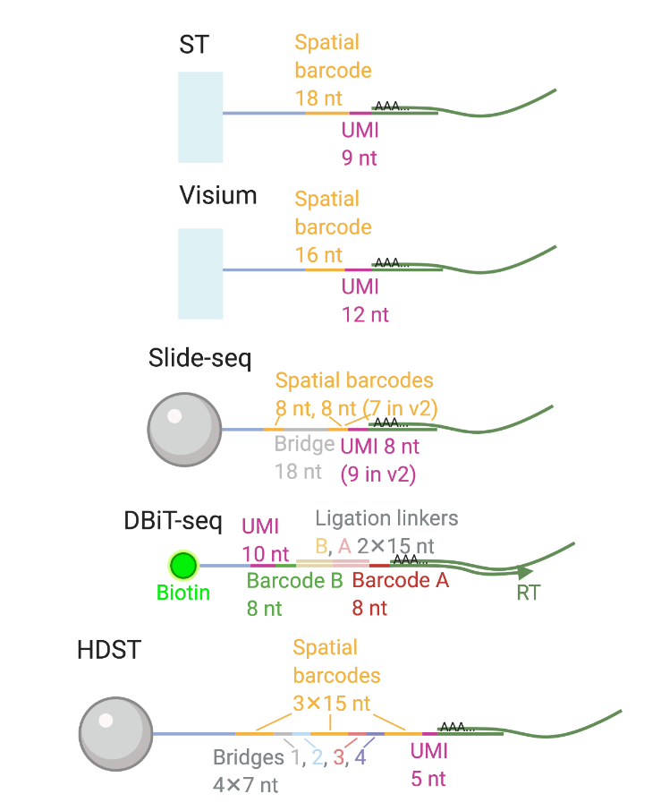
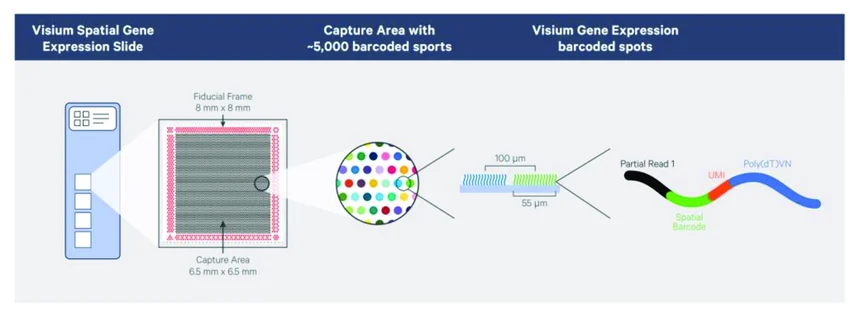
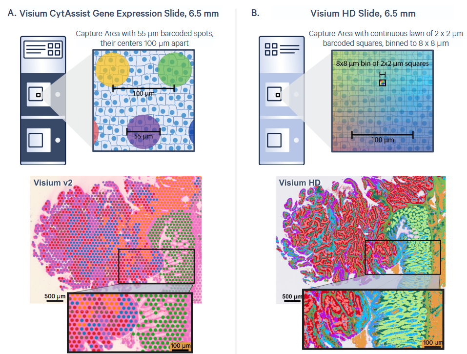
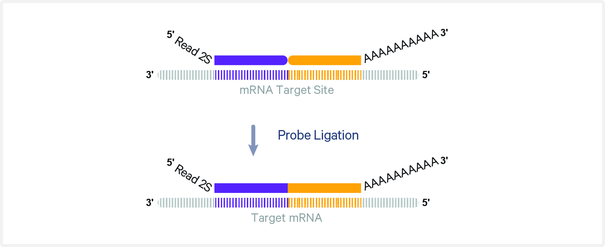
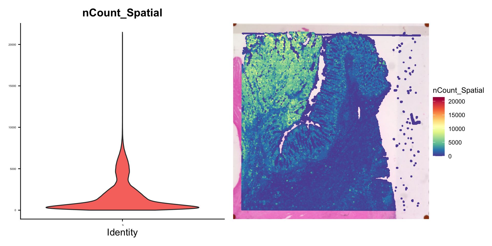
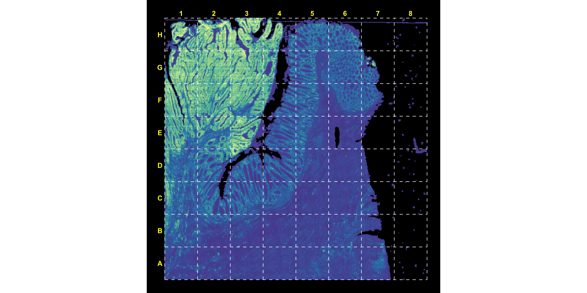
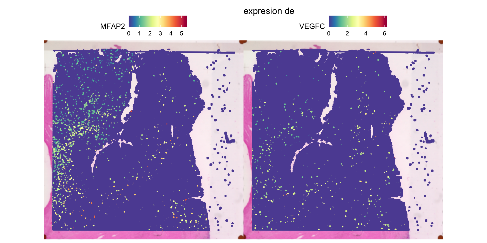
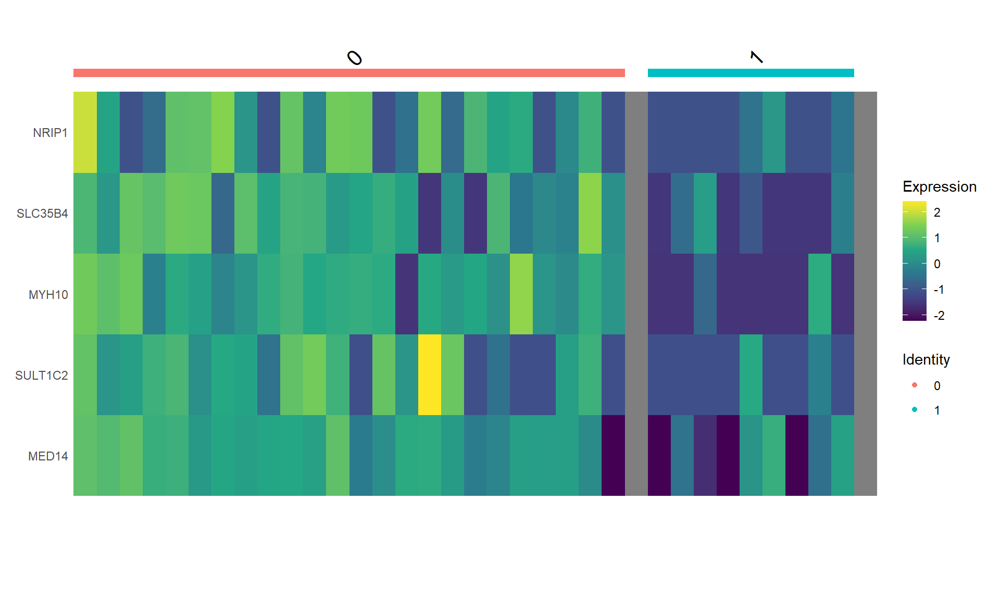

Clase 2: Del FASTQ a la Matriz de Conteo en Visium HD
Taller de Transcriptómica Espacial
2026-05-06
Resumen de la Clase 1
En la clase anterior cubrimos los fundamentos teóricos de las tecnologías espaciales basadas en secuenciación:
Conceptos clave:
Captura de transcritos en superficies con códigos de barras espaciales
Diferencias entre tecnologías basadas en secuenciación vs. imagen
El compromiso entre resolución, cobertura del transcriptoma y throughput
Directo a la práctica: del FASTQ a la matriz de conteo.

Tecnologías mencionadas:
Visium (10x Genomics) — spots de 55 µm
Slide-seq — beads de ~10 µm
Stereo-seq — 0.22 µm (BGI)
DBiT-seq — microfluídica
Visium v1/v2: Lo que ya conocemos

~5,000 spots por área de captura
Cada spot: 55 µm de diámetro
Separación centro a centro: 100 µm
Gaps entre spots → pérdida de información
Cada spot captura múltiples células (~1-10)
Resolución insuficiente para análisis unicelular
Requiere deconvolución computacional
Visium v1 y v2 serán descontinuados en favor de HD (al parecer ya)
Visium HD: La nueva generación
Arquitectura del slide:
Misma área de captura: 6.5 × 6.5 mm
~11 millones de cuadrados con código de barras
Cada cuadrado: 2 × 2 µm — resolución sub-celular
Sin gaps — cobertura continua del tejido
Binning digital:
Los datos crudos son a 2 µm
Space Ranger genera bins a 2, 8 y 16 µm
8 µm es el punto de partida recomendado
Se puede hacer binning personalizado (ej. bin2cell)
Característica
Visium v2
Visium HD
Unidad
Spot 55 µm
Cuadrado 2 µm
Cobertura
Con gaps
Continua
# Unidades
~5,000
~11 millones
Resolución efectiva
Multi-celular
Sub-celular
Tejidos
FF, FFPE
FF, FFPE, Fixed Frozen

¿Cómo funciona Visium HD?
El workflow es similar a Visium v2 con CytAssist:
Preparación del tejido en portaobjetos de vidrio estándar
Tinción H&E o IF e imagen con microscopio
Hibridación de sondas: panel de transcriptoma completo (whole transcriptome probes FFPE) ó
Captura de sondas: Fresh frozen con oligo polyDT
Ligación de sondas en el tejido (si FFPE)
Transferencia con CytAssist: las sondas ligadas se transfieren al slide Visium HD
Extensión y construcción de librería: los códigos de barras espaciales se incorporan
Secuenciación — configuración: 43 bp R1, 50 bp (75 bp FF) R2, 10 bp i7, 10 bp i5 (FFPE)
Diferencia clave Visium HD usa hibridación de sondas (probe-based FFPE), o captura poly-dT directa (fresh frozen). R1 es mayor por la mayor cantidad de cuadritos
Visium v2 vs HD: Lo que se mantiene
Igual que antes:
Instrumento CytAssist para la transferencia
Misma área de captura (6.5 × 6.5 mm)
Procesamiento con Space Ranger
Análisis downstream con Seurat/Scanpy
Referencias genómicas de 10x (GRCh38, mm10)
Formato de salida (matrices sparse, archivos H5)
Lo que cambia:
Resolución: 55 µm → 2 µm
De spots con gaps → cobertura continua
Sondas (probe-based) en lugar de poly-dT (v1)
Archivos de salida mucho más grandes
Se necesita el archivo .vlf del slide
Requiere más recursos computacionales
Concepto de binning digital post-hoc
Nuestro dataset: Cáncer Colorrectal (Visium HD)
Estudio: Oliveira et al. (2025) “High-definition spatial transcriptomic profiling of immune cell populations in colorectal cancer”
Ya están en las carpetas en /mnt/data/transcriptomica/sra_visium_hd_clase_ST2
Los datos crudos de secuenciación están depositados en el Sequence Read Archive (SRA). Para descargarlos usamos prefetch + fasterq-dump del SRA Toolkit:
module load sra-tools # Buscar los SRR accessions asociados a GSE280318# (se pueden encontrar en la página de GEO o con esearch)# Descargar con prefetch (más robusto que fasterq-dump directo)prefetch SRR12345678 # reemplazar con el accession real# Convertir a FASTQfasterq-dump--split-files--threads 8 SRR12345678# Comprimir (Space Ranger necesita .fastq.gz)pigz-p 8 *.fastq
Tip: sesiones persistentes
Slurm array job con una lista o:
#4 archivos de un total de 20 cada vez#SBATCH --output=logs/sra_%a.out#SBATCH --error=logs/sra_%a.err#SBATCH --array=1-20%4module load sra-tools #La fila SLURM_ARRAY_TASK_ID del sra_list.txtSRA_ID=$(sed-n"${SLURM_ARRAY_TASK_ID}p" sra_list.txt)prefetch$SRA_ID# reemplazar con el accession realfasterq-dump"$TMP_DIR/$SRA_ID/$SRA_ID.sra"--split-files--threads$SLURM_CPUS_PER_TASK--temp$TMP_DIR--outdir ./pigz-p$SLURM_CPUS_PER_TASK${SRA_ID}*.fastq
Usa tmux o screen para que la descarga no se interrumpa si se cae la conexión SSH:
tmux new -s descarga# ... ejecutar descarga ...# Ctrl+b, d para desconectar# tmux attach -t descarga para reconectar
Descarga de imágenes y matrices desde GEO
Además de los FASTQs, necesitamos las imágenes (CytAssist + microscopio) y opcionalmente las matrices pre-procesadas. Estas están en los archivos suplementarios de GEO:
tmux new -s geo_images# Explorar el contenido del FTP de GEOcurl-s"ftp://ftp.ncbi.nlm.nih.gov/geo/series/GSE280nnn/GSE280315/suppl/"# Descargar el archivo RAW completo (~32 GB, contiene imágenes + matrices)wget-c--timeout=60 --tries=10 --waitretry=30 \"ftp://ftp.ncbi.nlm.nih.gov/geo/series/GSE280nnn/GSE280315/suppl/GSE280315_RAW.tar"\-O GSE280315_RAW.tar# Desempaquetartar-xvf GSE280315_RAW.tar# Ctrl+b, d para desconectar tmux
Importante sobre las URLs de GEO
los urls de ftp siguen un formato predecible GSE280nnn/GSEID/matrix|suppl| checa la documentación para tus fines README geo ftp
Archivos que necesitamos para Space Ranger
Para ejecutar spaceranger count con datos Visium HD FFPE necesitamos:
Archivo
Descripción
Fuente
FASTQs (R1, R2, I1, I2)
Lecturas de secuenciación
SRA / 10x
Imagen CytAssist (.tif)
Para alineación de fiduciales
GEO (tar)/ 10x
Imagen microscopio (.btf)
H&E alta resolución (opcional)
GEO (tar) / 10x
Referencia genómica
GRCh38-2020-A
10x downloads
Probe set (.csv)
Panel de sondas v2.0
10x downloads o carpeta SRanger
Slide layout (.vlf)
Geometría del slide H1-VM2JXXK
tar de GEO
# Referencia genómica (~15 GB descomprimida)wget-c"https://cf.10xgenomics.com/supp/spatial-exp/refdata-gex-GRCh38-2020-A.tar.gz"tar-xzvf refdata-gex-GRCh38-2020-A.tar.gz# Probe setwget-c"https://cf.10xgenomics.com/supp/spatial-exp/probeset/\Visium_Human_Transcriptome_Probe_Set_v2.0_GRCh38-2020-A.csv"#Spacerangeer ya está en la carpeta spaceranger-4.1.0/probe_sets/
SpaceRanger ya está instalado en /mnt/data/transcriptomica/sra_visium_hd_clase_ST2/software/spaceranger-4.1.0
Instalación de Space Ranger (sin permisos de admin)
Space Ranger es un tarball autocontenido — no requiere sudo ni gestor de paquetes:
# 1. Crear directorio para softwaremkdir-p ~/software &&cd ~/software# 2. Descargar (obtener URL de https://www.10xgenomics.com/support/# software/space-ranger/downloads)wget-O spaceranger-3.0.0.tar.gz \"https://cf.10xgenomics.com/releases/space-ranger/spaceranger-4.1.0.tar.gz"# 3. Desempaquetartar-xzvf spaceranger-4.1.0.tar.gz# 4. Agregar al PATHexportPATH=..../software/spaceranger-4.1.0:$PATHecho'export PATH=.../software/spaceranger-4.1.0:$PATH'>> ~/.bashrc# 5. Verificarspaceranger--version
¿Qué incluye el tarball?
Space Ranger empaqueta todo: su propio Python, su propio STAR, todas las dependencias. No necesita nada del sistema excepto un kernel Linux razonablemente moderno (glibc ≥ 2.17).
CRC_VisiumHD/outs/
├── web_summary.html # Reporte QC interactivo (todos los bins)
├── spatial/ # Información espacial
|
├── binned_outputs/ # ← NUEVO en HD
│ ├── square_002um/ # Bins a 2 µm
│ ├── square_008um/ # Bins a 8 µm (recomendado)
│ └── square_016um/ # Bins a 16 µm (para laptops)
| ├── filtered_feature_bc_matrix.h5
| ├── filtered_feature_bc_matrix/ # Matriz de conteo (bins bajo tejido)
│ | ├── barcodes.tsv.gz
│ | ├── features.tsv.gz
│ | └── matrix.mtx.gz
| ├── raw_feature_bc_matrix/ # Matriz completa
| └── analysis/ #Clusters, DEGs, umaps etc.
└── cloupe.cloupe # Archivo para Loupe Browser
Para el análisis downstream en laptops, usaremos los bins de 16 µm por su menor tamaño computacional.
Alternativa open source: STARsolo
¿Por qué una alternativa?
Space Ranger es software propietario (aunque gratuito)
STARsolo es GPL, parte de STAR ya instalado en clúster
Sólo jugar para ver qué hace Space Ranger por dentro
Rápido para el paso de alineamiento
¿Qué hace STARsolo?
Lo mismo que el core de Space Ranger/Cell Ranger:
Demultiplexar códigos de barras espaciales
Alinear lecturas al genoma de referencia (STAR)
Colapsar UMIs (deduplicación)
Generar matriz de conteo (genes × barcodes)
¿Qué NO hace?
Detección de tejido en la imagen H&E
Alineación de fiduciales
Binning (2 µm → 8 µm → 16 µm)
Generación del directorio spatial/
Pero…
STARsolo
Para Visium estándar, STARsolo es un reemplazo directo. Para Visium HD, la arquitectura de barcode multi-segmento (43bp, ~11M posiciones) y la química basada en sondas hacen que Space Ranger sea, en la práctica, la única opción actualmente. Este es un ejemplo real de cómo las herramientas open source a veces necesitan tiempo para alcanzar a las plataformas comerciales.

Pregunta Qué binneado corresponde a las matrices descargadas de GEO?
Checar el web summary
Resumen del flujo de trabajo
Code
flowchart LR A[FASTQs<br/>SRA] --> D[Space Ranger] D --> C[Matriz +<br/>spatial/] E[Imágenes<br/>GEO/10x] --> D F[Referencia<br/>GRCh38] --> D G[Probe set<br/>+ slide file] --> D C --> H[Análisis<br/>downstream<br/>Seurat/Scanpy]
flowchart LR
A[FASTQs<br/>SRA] --> D[Space Ranger]
D --> C[Matriz +<br/>spatial/]
E[Imágenes<br/>GEO/10x] --> D
F[Referencia<br/>GRCh38] --> D
G[Probe set<br/>+ slide file] --> D
C --> H[Análisis<br/>downstream<br/>Seurat/Scanpy]
Volvamos a los datos de cáncer descargados de GEO
Como en los programas de cocina, vamos a trabajar como si ya hubiera terminado el pipeline con los datos descargados de GEO. Visium HD de un paciente con cáncer colorrectal (P2CRC) del estudio de Oliveiraet al.(2025).
Trabajaremos con archivos descargados directamente de GEO, sin la estructura completa de directorios de Space Ranger. Esto es un escenario realista muchas veces los datos públicos vienen así.
pacienteID/outs
├── (SOMEID)_filtered_feature_bc_matrix.h5
└── spatial/
├── tissue_positions.parquet #Cambiar el nombre
├── (SOMEID)_tissue_lowres_image.png
└── scalefactors_json.json #Cambiar el nombre
Con Seurat
Code
## Instalar si es necesario (solo la primera vez) # install.packages(c("Seurat", "hdf5r", "ggplot2", "patchwork", "dplyr")) # install.packages("BiocManager") # BiocManager::install("glmGamPoi") # para SCTransform #o bien pak::pkg_install como recomendó Valerialibrary(Seurat)library(hdf5r)library(ggplot2) library(patchwork)library(dplyr)library(arrow)library(ape)library(SpatialExperiment)#Much faster implementation of find markers:#pak::pak('immunogenomics/presto')packageVersion("Seurat")
[1] '5.5.0'
Code
## Debe ser >= 5.0.0
Verificar la versión de Seurat — necesitamos v5+ para soporte de Visium HD
Descomprimir la imagen
Code
## Si la imagen está comprimida, mover archivos y cambiar nombresgunzip GSM8594568_P2CRC_image.tif.gz
Assays(object) #En datos director de space ranger pueden ser diferentes resoluciones DefaultAssay(object)
An object of class "SimpleAssays"
Slot "data":
List of length 1
Code
vln.plot <-VlnPlot(object, features ="nCount_Spatial", pt.size =0) +theme(axis.text =element_text(size =4)) +NoLegend()count.plot <-SpatialFeaturePlot(object, features ="nCount_Spatial") +theme(legend.position ="right")vln.plot | count.plot

Subsetting opcional para que no tarde tanto

Elijan un bloque (o no, pero tardará más)
Code
plot_data$cell <-colnames(object)# Function to pick a blockpick_block <-function(row_letter, col_number, plot_data, x_cuts, y_cuts) { r <-match(toupper(row_letter), LETTERS) c <- col_number cells <- plot_data$cell[ plot_data$x >= x_cuts[c] & plot_data$x < x_cuts[c +1] & plot_data$y >= y_cuts[r] & plot_data$y < y_cuts[r +1] ]return(cells)}# cells_block <-pick_block("G", 4, plot_data, x_cuts, y_cuts)object <-subset(object, cells = cells_block)#cat("Bins in block D3:", ncol(object_block), "\n")#SpatialFeaturePlot(object, features = "nCount_Spatial")
Normalización
En el tutoral utilizan la normalización básica logarítmica. La mejor normalización aún no está definida
Code
object <-NormalizeData(object)
Feature plots: marcador en el tejido en lugar del UMAP
Code
object <-FindVariableFeatures(object)#2 genes variables randomgenrandom <-sample(VariableFeatures(object), 2) SpatialFeaturePlot(object, features = genrandom) +ggtitle(paste0(c("expresion de", paste(genrandom, collapse =" y ") )))

Clustering
Utiliza sketching que mantiene una subpoblación en memoria y todo el dataset en disco. Más eficiente para grandes datasets.
Code
#Más tardadoobject <-ScaleData(object)# Seleccionamos 20,000 células de como 500,000.object <-SketchData(object = object,#Más o menos dependiendo del tiempo y memoriancells =10000,method ="LeverageScore",sketched.assay ="sketch")
Los resultados del sketch se guardan en otro assay. Trabajamos sobre este para hacer el clustering y la proyección
Modularity Optimizer version 1.3.0 by Ludo Waltman and Nees Jan van Eck
Number of nodes: 10000
Number of edges: 409915
Running Louvain algorithm...
Maximum modularity in 10 random starts: 0.8597
Number of communities: 24
Elapsed time: 1 seconds
Hacemos la proyección de vuelta al dataset entero: cluster, primeros 5 PCs de PCA y coordenadas de umap
Code
#Aún más tardado y puede faltar memoriaobject <-ProjectData(object = object,assay ="Spatial",full.reduction ="full.pca.sketch",sketched.assay ="sketch",sketched.reduction ="pca.sketch",umap.model ="umap.sketch",#ajustar si se queja de falta de memoriadims =1:5,refdata =list(seurat_cluster.projected ="seurat_cluster.sketched"))
Visualización UMAP
Too many spots though
Code
DefaultAssay(object) <-"sketch"Idents(object) <-"seurat_cluster.sketched"p1 <-DimPlot(object, reduction ="umap.sketch", label = F) +ggtitle("Sketched clustering (5,000 cells)") +theme(legend.position ="bottom")#No parece quitar muchas células pero ayuda a la visualizaciónobject <-subset(object, cells =colnames(object)[!is.na(object$seurat_cluster.projected)])# switch to full datasetDefaultAssay(object) <-"Spatial"Idents(object) <-"seurat_cluster.projected"p2 <-DimPlot(object, reduction ="full.umap.sketch", label = F) +ggtitle("Projected clustering (full dataset)") +theme(legend.position ="bottom")p1 | p2
DefaultAssay(object) <-"Spatial"Idents(object) <-"seurat_cluster.projected"#Downsampled object to make visualization easierobject_subset <-subset(object, cells =Cells(object[["Spatial"]]), downsample =1000)# Order clusters by similarityDefaultAssay(object_subset) <-"Spatial"Idents(object_subset) <-"seurat_cluster.projected"object_subset <-BuildClusterTree(object_subset, assay ="Spatial", reduction ="full.pca.sketch", reorder = T)markers <-FindAllMarkers(object_subset, assay ="Spatial", only.pos =TRUE)markers %>%group_by(cluster) %>% dplyr::filter(avg_log2FC >1) %>%slice_head(n =5) %>%ungroup() -> top5object_subset <-ScaleData(object_subset, assay ="Spatial", features = top5$gene)p <-DoHeatmap(object_subset, assay ="Spatial", features = top5$gene, size =2.5) +theme(axis.text =element_text(size =5.5)) +NoLegend()p

Con bioconductor
Code
library(Banksy)library(ggspavis)library(igraph)library(pheatmap)library(scran)library(scuttle)library(SpotSweeper)#library(tidyr)#Para importar 10X pero acá sólo convertimos el Seurat#library(VisiumIO)#Maybe#library(magick)#library(BiocParallel)#library(DropletUtils)#library(scater)#library(sf)#library(spacexr)
Sólo transformamos el objeto Seurat en lugar de importarlo de novo
spe <- spe[, colSums(counts(spe)) >0]# Now normalizespe <-logNormCounts(spe)dec <-modelGeneVar(spe)hvg <-getTopHVGs(dec, n=2e3)n_common <-length(intersect(hvg, VariableFeatures(object)))message(n_common, " de ", length(hvg), " HVGs en común entre SPE y Seurat")
Usamos banksy para computar PCA y clustering
Code
# set seed for random number generation# in order to make results reproducibleset.seed(112358)# 'Banksy' parameter settingsk <-8# consider first order neighborsl <-0.2# use little spatial informationa <-"logcounts"xy <-c("array_row", "array_col")# restrict to selected featurestmp <- spe[hvg, ]# compute spatially aware 'Banksy' PCstmp <-computeBanksy(tmp, assay_name=a, coord_names=xy, k_geom=k)tmp <-runBanksyPCA(tmp, lambda=l, npcs=20)reducedDim(spe, "PCA") <-reducedDim(tmp)## run UMAP (for visualization purposes only)# spe <- runUMAP(spe, dimred="PCA")# build cellular shared nearest-neighbor (SNN) graphg <-buildSNNGraph(spe, use.dimred="PCA", type="jaccard", k=20)# cluster using Leiden community detection algorithmk <-cluster_leiden(g, objective_function="modularity", resolution=1.2)table(spe$Banksy <-factor(k$membership))
Polański K et al. (2024). Bin2cell reconstructs cells from high resolution Visium HD data. Bioinformatics 40(9): btae546. doi:10.1093/bioinformatics/btae546